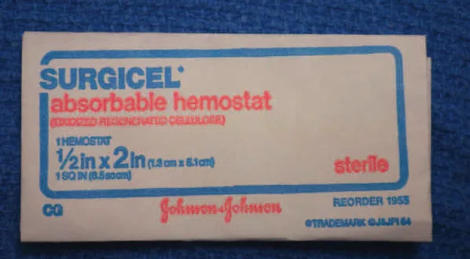
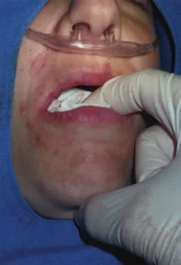

نسخه استخراجشده؛ ترجمه یا تأیید علمی انجام نشده است. وضعیت: captured
عوامل هموستاتیک موضعی جذبی وقتی به کار میروند که روشهای متعارف هموستاز مؤثر نبودهاند. یعنی اینها مرحلهی بعد از فشار و لیگاتورند، نه جایگزین آنها.
رتبهبندی اثربخشی — طبق مطالعات in vitro:
۱. کلاژن میکروفیبریلار — مؤثرترین در حفظ هموستاز
۲. کلاژن
۳. اسفنج
۴. سلولز اکسیده
مزایای کلاژن میکروفیبریلار: شروع سریع هموستاز، واکنش بافتی کم، نرخ عفونت پایین و قابلیت جذب؛ عیبش هم گرانی زیاد و عمر قفسهای کوتاه است. بیشتر مواد کلاژنی ظرف ۱۴ تا ۵۶ روز کاملاً جذب میشوند.
و اشتباه رایج دربارهی سلولز اکسیده: نشان داده شده که ضعیف جذب میشود و میتواند عوارض ترمیمی پس از عمل بسازد. یعنی مادهای که در بسیاری از مطبها هست، در انتهای فهرست اثربخشی قرار دارد و بهتر است پس از هموستاز از محل برداشته شود.
در مقابل، BloodSTOP که ۱۰۰ درصد سلولز طبیعی و محلول در آب است، پس از هموستاز بدون بر هم زدن سطح زخم بهراحتی برداشته میشود.
ژلاتین: در FloSeal (ترکیب ترومبین و گرانولهای ژلاتین)، گرانولها هنگام تماس با خون حدود ۱۰ تا ۲۰ درصد متورم میشوند و همین به بستن ناحیهی خونریزی کمک میکند. همین تورم اگر نزدیک کانال آلوئولار تحتانی باشد، میتواند به عصب فشار بیاورد.
ترومبین — سه نکتهی جدی:
• نباید مستقیماً روی رگهای بزرگ به کار رود، چون جذب سیستمیک میتواند به ترومبوز داخلعروقی بینجامد.
• ترومبین پلاسمای انسانی با خطر بالقوهی انتقال ویروس یا بیماری همراه بوده است؛ ترومبین نوترکیب (مانند Recothrom) جایگزین مهندسیشده و در دسترس بهصورت پودر است.
• و یک شرط عملکردی: برای اینکه ترومبین هموستاز را حفظ کند، به فیبرینوژن در گردش نیاز است، چون برای تشکیل لخته لازم است. ترومبین در بیمار با فیبرینوژن ناکافی کار نمیکند.
ترومبین عمدتاً بهصورت محلولهای ۵۰۰۰ تا ۱۰٬۰۰۰ واحدی بهعنوان عامل موضعی به کار میرود که خونریزی مویرگی را تسریع میکند.
موم استخوان — مشکل ماندگاری: هشدار: باید با احتیاط به کار رود، چون در آب نامحلول است و جذب نمیشود؛ میتواند التهاب، واکنش جسم خارجی و عفونت بدهد و ترمیم استخوان را مهار کند، و برای جراحی ایمپلنت توصیه نمیشود. جایگزینی وجود دارد که محلول در آب است و ظرف ۴۸ ساعت حل میشود — مزیت روشنی نسبت به موم استخوان.
ترانگزامیک اسید ۴٫۸ درصد: یک دهانشویهی ضدفیبرینولیتیک که با مهار تبدیل پلاسمینوژن به پلاسمین، تشکیل لخته را تسهیل میکند. یعنی لخته را نمیسازد؛ از تجزیهاش جلوگیری میکند.

این بخش را باید مثل یک پروتکل اورژانس بخوانی، نه یک درس.
مکانیسم: خونریزی در فضاهای سابلینگوال و سابمگزیلاری باعث بالا رفتن زبان و کف دهان میشود. و دلیل اینکه به انسداد راه هوایی میرسد ساختاری است: گسترش قدامی هماتوم توسط لایههای سطحی فاسیای سرویکال محدود میشود — پس هماتوم راهی جز بالا رفتن ندارد.
علائم و نشانهها — و بازهی زمانی که باید بدانی:
تورم سابلینگوال میتواند فوری یا تأخیری تا ۴ تا ۸ ساعت پس از جراحی ظاهر شود، با این نشانهها:
• بالا آمدن کف دهان
• بیرونزدگی زبان
• خونریزی شدید داخلدهانی
• دشواری بلع
• دپرسیون تنفسی
آن بازهی ۴ تا ۸ ساعته را جدی بگیر: بیماری که ساعت ۱۱ صبح با وضعیت طبیعی مرخص شده، میتواند عصر همان روز در وضعیت اورژانس باشد. این یعنی دستور مکتوب و شمارهی تماس اضطراری در این جراحیها اختیاری نیست.
و پیامد نهایی: انسداد راه هوایی باید دغدغهی حیاتی باشد چون میتواند به وضعیتی تهدیدکنندهی حیات بینجامد. برجستگی مدیال دیوارهی حلق و ادم فوقگلوتیک ممکن است رخ دهد که گاهی نیازمند تأمین راه هوایی پایدار با تراکئوتومی یا اینتوباسیون است.
اقدامات تا رسیدن کمک پزشکی:
• بیمار را از حالت درازکش به وضعیت نشسته ببر.
• فشار دودستی: گاز ۴×۴ روی سطح لینگوال مندیبل همزمان با فشار رو به بالا از خارج دهان.
• فورسپس یانگ میتواند برای بیرون کشیدن زبان به کار رود — هم خونریزی را کم میکند و هم راه هوایی را باز نگه میدارد تا کمک پزشکی برسد.
این اقدامها را از پیش حفظ کن؛ در آن لحظه فرصت فکر کردن نیست. با دیدن هر نشانهی انسداد راه هوایی (تنگی نفس، دشواری بلع، خسخس، استریدور یا سیانوز) بیدرنگ کمک اورژانس بخواه. لیگاتور رگ درمان ایدهآل است، ولی در مطب بهدلیل محل و دسترسی اغلب بسیار دشوار است و کنترل قطعی ممکن است به جراحی و آمبولیزاسیون نیاز داشته باشد.
و پیشگیری — که همیشه ارزانتر است: همهی این ماجرا از یک سوراخشدگی پلیت لینگوال شروع میشود. سه اقدام پیشگیرانه از درسهای پیشین:
۱. شناسایی آندرکات لینگوال — که در ۶۶ درصد جمعیت با میانگین ۲٫۴ میلیمتر وجود دارد — در معاینه و تصویربرداری.
۲. کنار گذاشتن تثبیت بایکورتیکال که دیگر توصیه نمیشود.
۳. استفاده از tie-back بافت لینگوال برای کاهش خونریزی و بهبود دید.

نوع سؤال: ساخت کلمه · 6 خانه
حروف منبع: ژ · ل · ا · ی · ت · ن